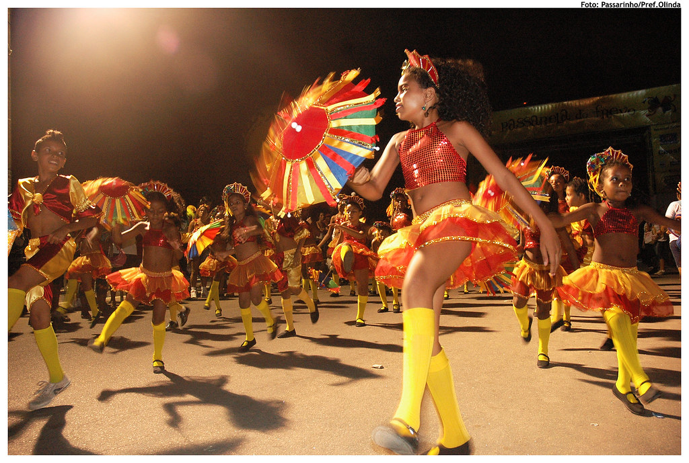
Vassourinhas (marcha de frevo) · o baque do maracatu nação · Chico Science & Nação Zumbi, Da Lama ao Caos
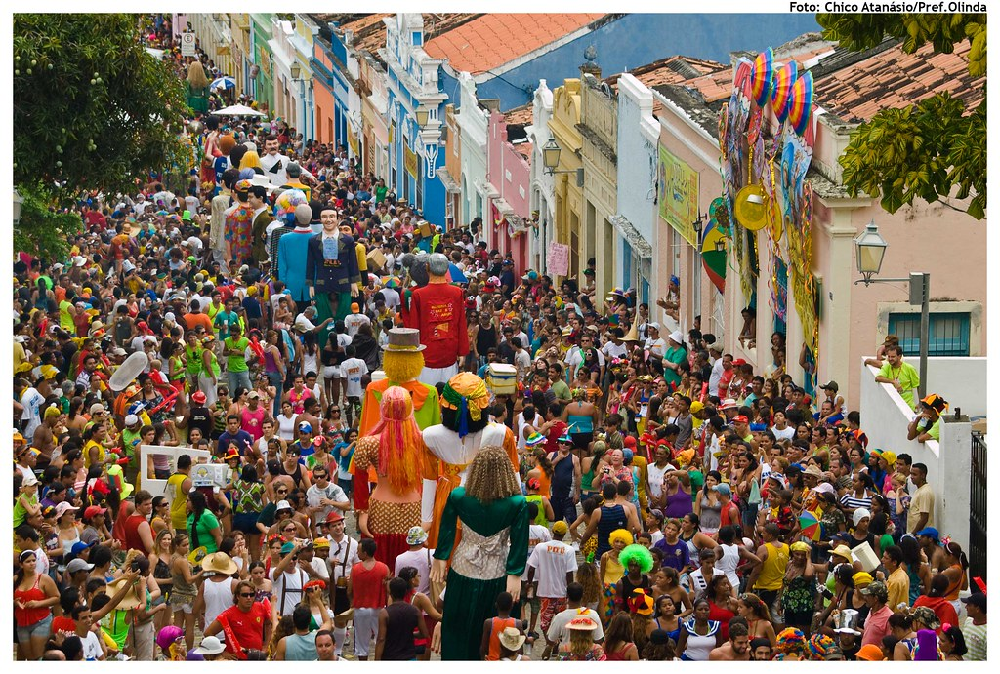
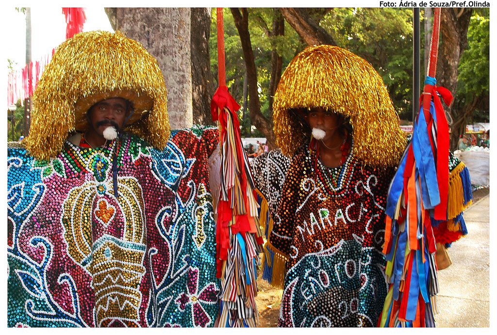
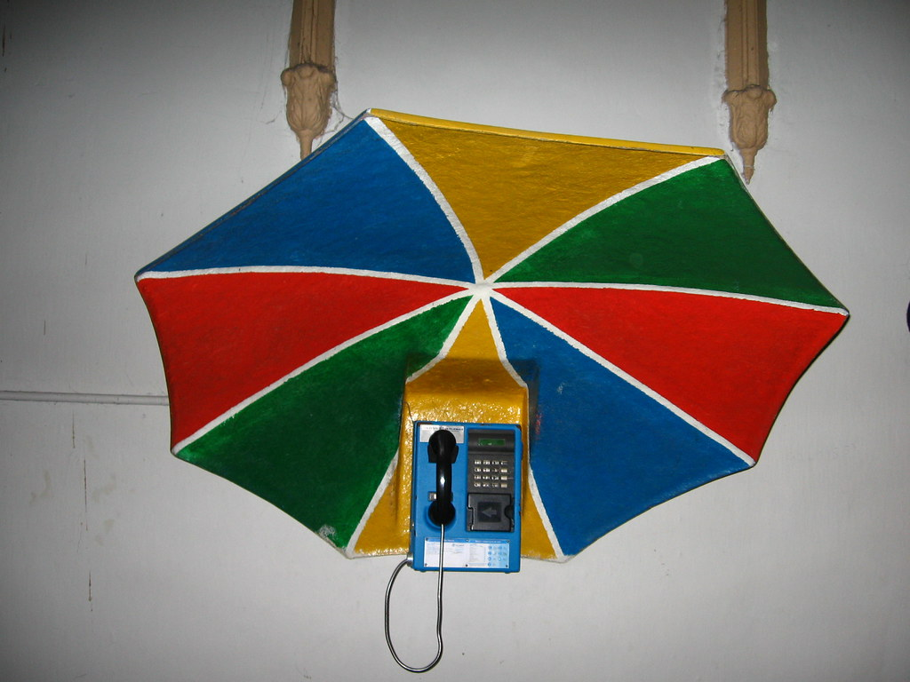
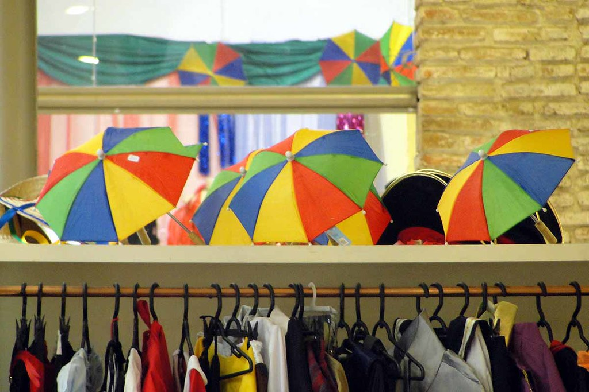
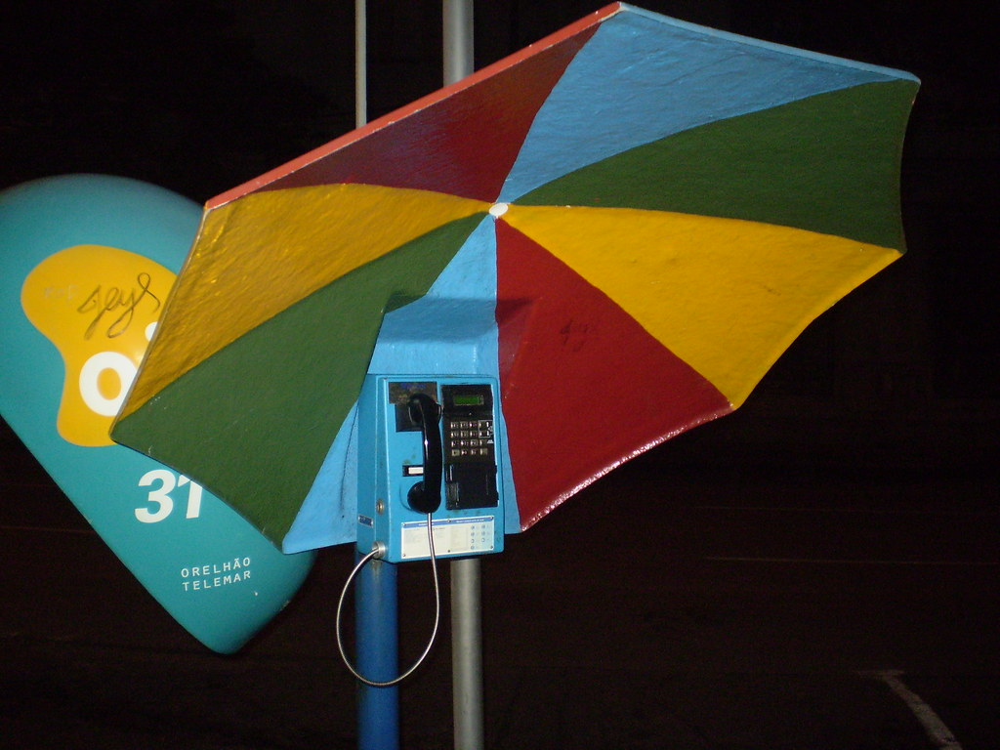
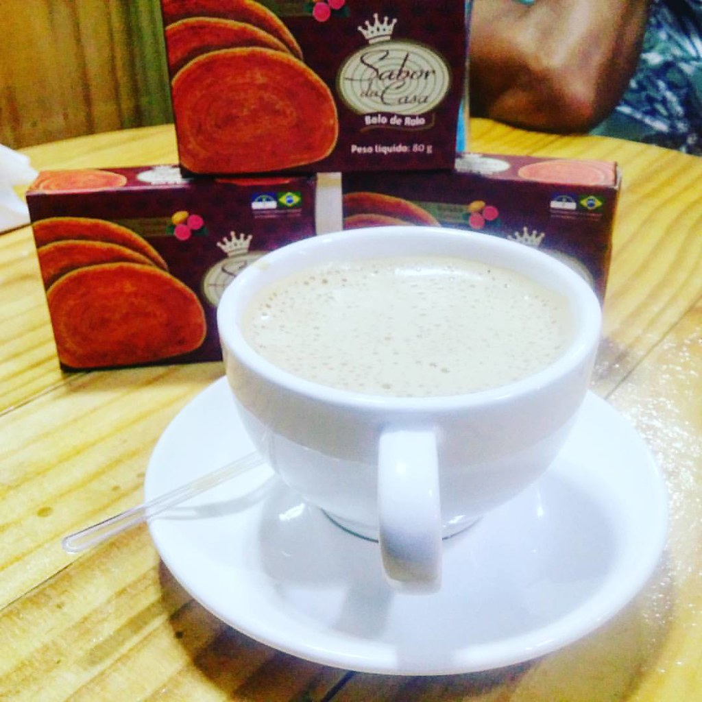
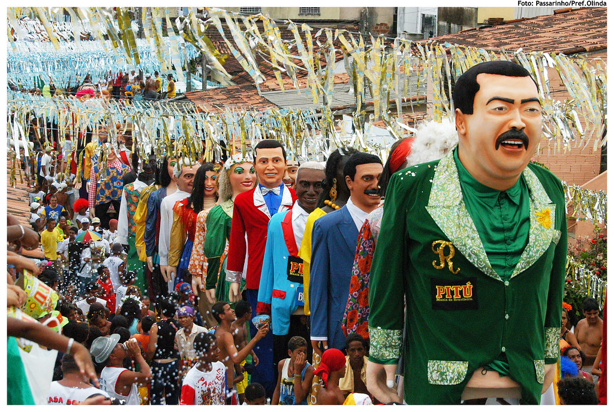
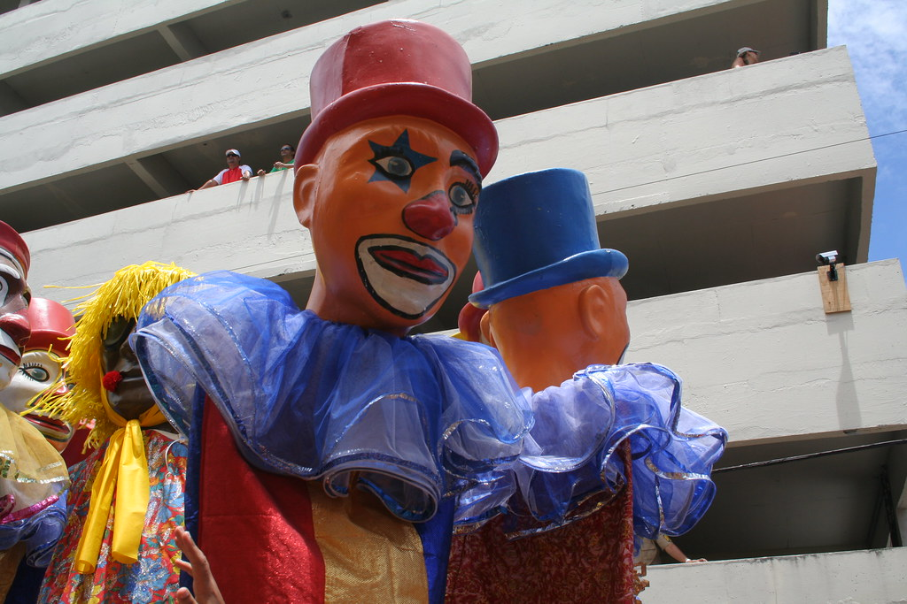
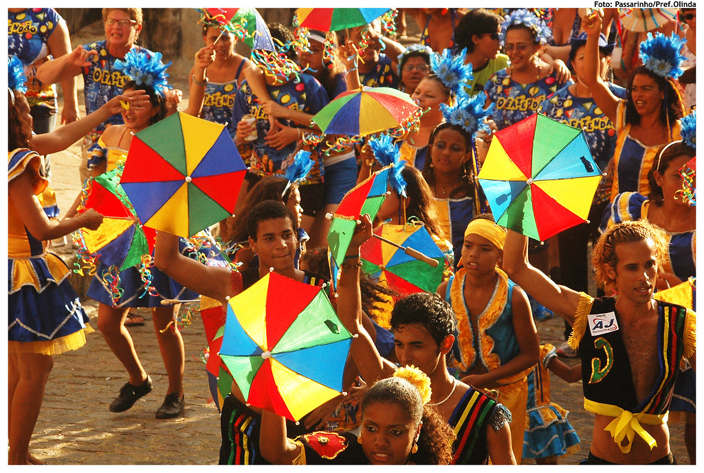
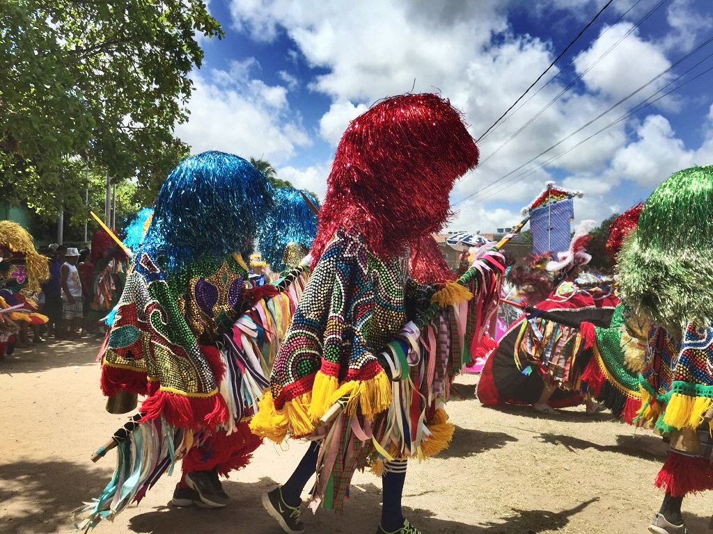
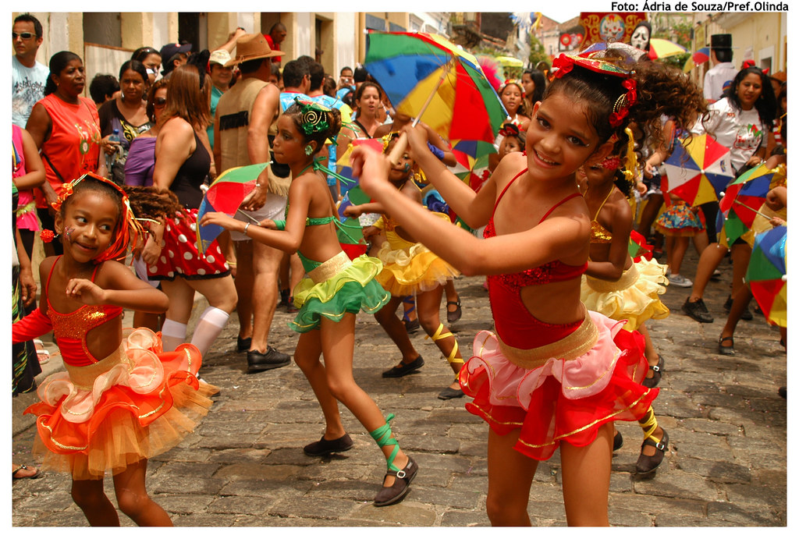
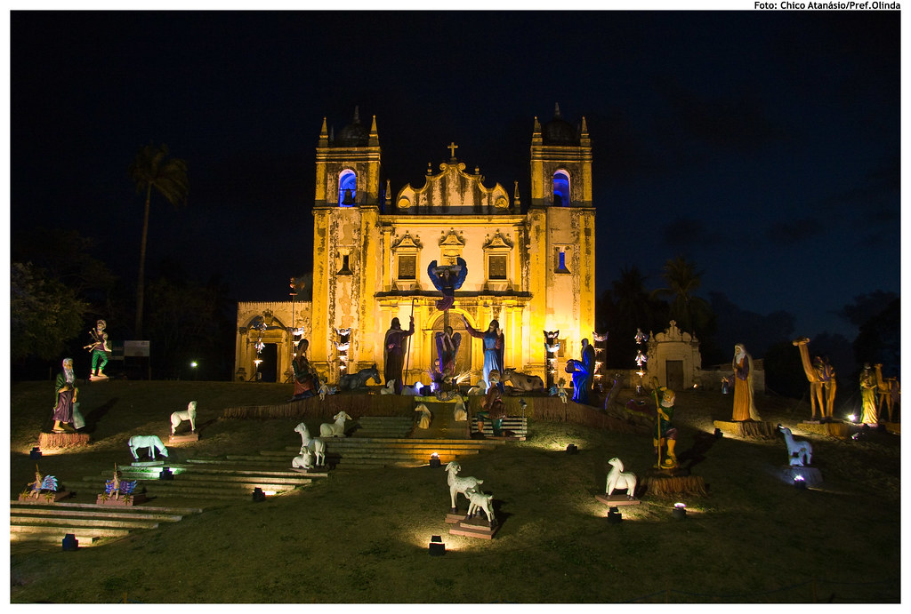
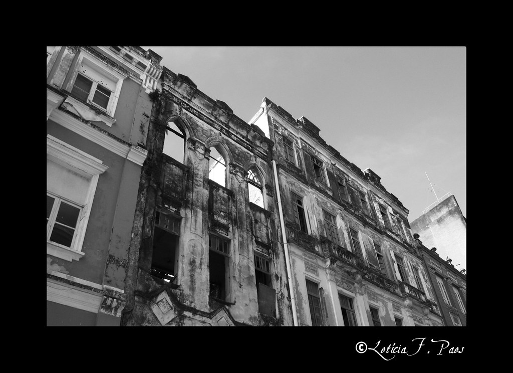
Sombrinha de frevo — gomos amarelo, vermelho, verde e azul: a forma e a paleta da estampa.
Cabeleira do caboclo — as tiras de celofane colorido viram os raios que explodem atrás.
Ladeira de Olinda — o casario colorido entra como silhueta na base.
Passista — o gesto do passo dá a inclinação da sombrinha.
Bolo de rolo — a espiral fina vira ornamento suave na barra.
Bonecos gigantes — cor e escala de festa; ficam no painel como clima.
A sombrinha de frevo enorme, inclinada como na mão do passista, com a cabeleira de celofane do caboclo de lança explodindo atrás e o casario de Olinda lá embaixo.
Protagonista: a sombrinha de frevo aberta, gomos amarelo, vermelho, verde e azul, com franja.
Em volta: tiras de celofane colorido (a cabeleira do caboclo de lança) irradiando como fogos; o casario e as torres de Olinda em silhueta.
Fundo: azul do céu de Olinda chapado; o casario na base faz o respiro para a assinatura.
Decorações: confete, franjas de sombrinha e fitinhas.
Saia midi bem rodada (gira como a sombrinha) e top; Havaianas: palmilha com os gomos do frevo e tira amarela.
Caboclo de lança: entra só a cabeleira colorida, com proposta de parceria com um grupo de maracatu rural de Nazaré da Mata. Xilogravura e barro de Caruaru como homenagem, com crédito aos mestres.
Frevo: Patrimônio Imaterial da Humanidade UNESCO (2012). Olinda: Patrimônio Mundial UNESCO (1982). Maracatu Nação e Maracatu de Baque Solto: Patrimônio Cultural do Brasil (IPHAN, 2014). Fotos: Flickr e Wikimedia Commons (via Openverse), autor e licença em cada imagem; local conferido no título, nas tags ou na descrição.